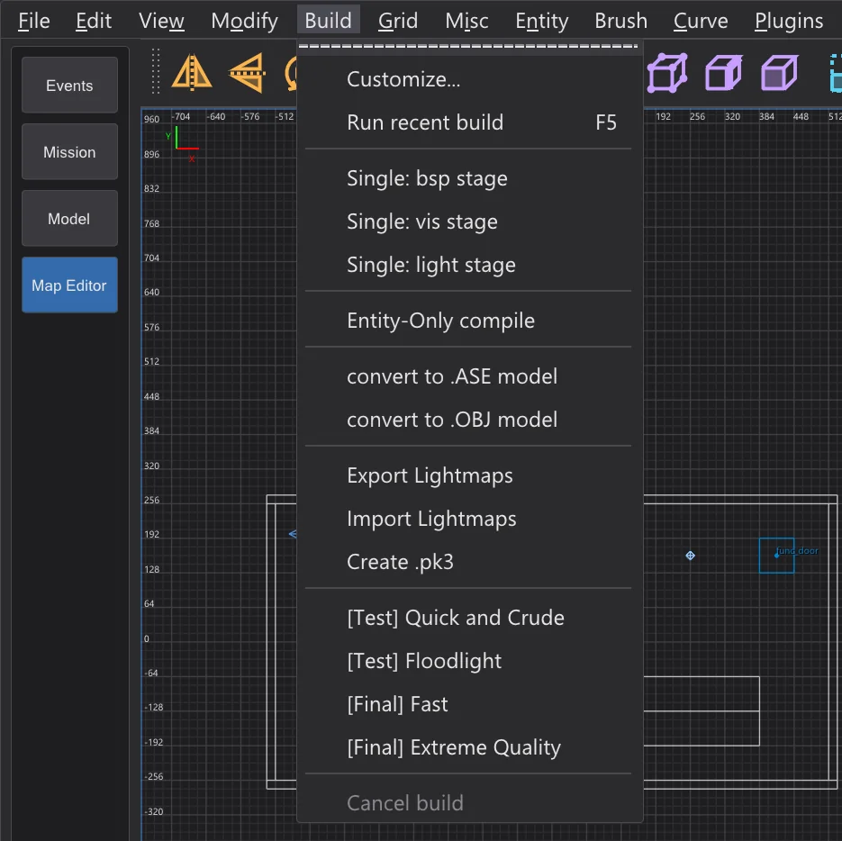
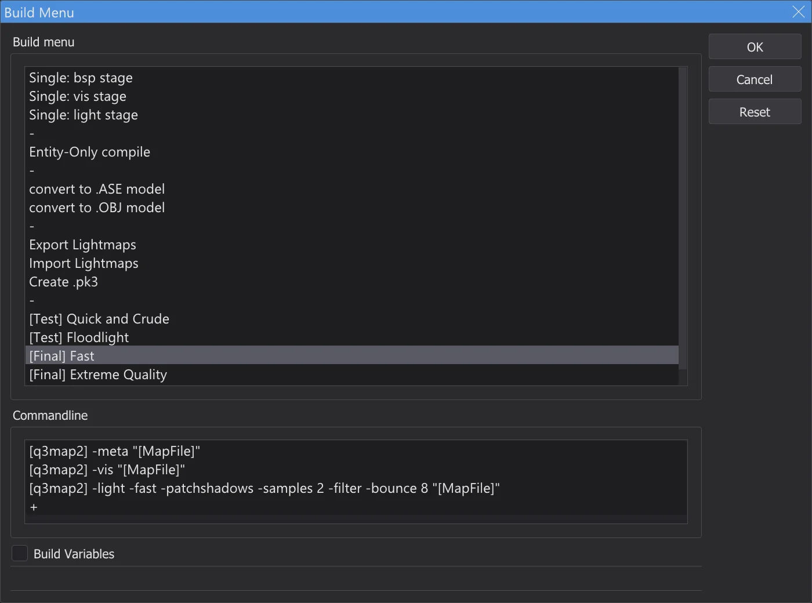
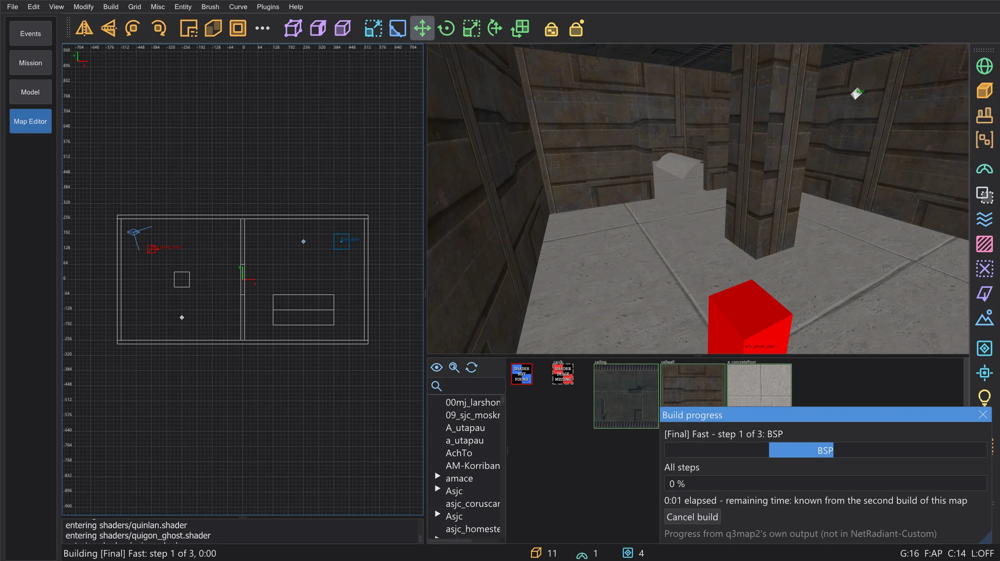
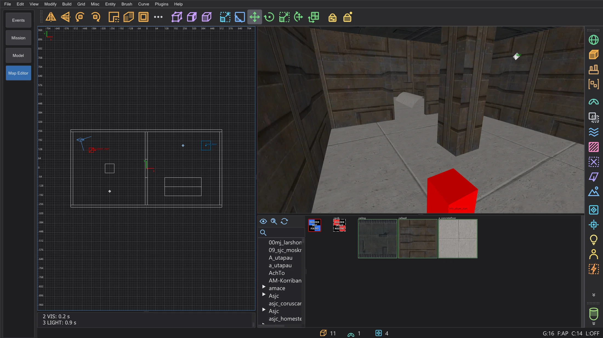
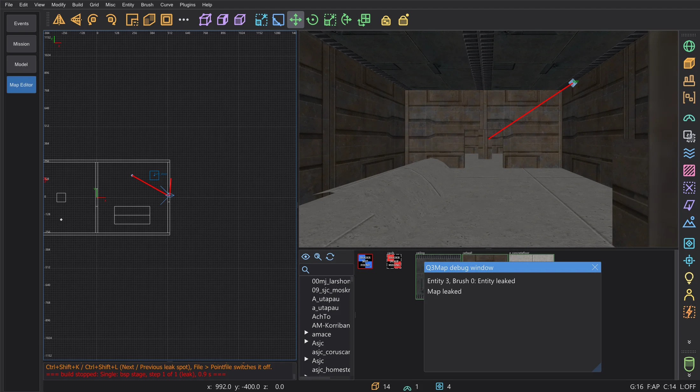
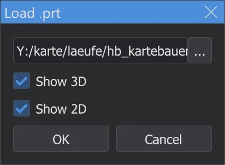
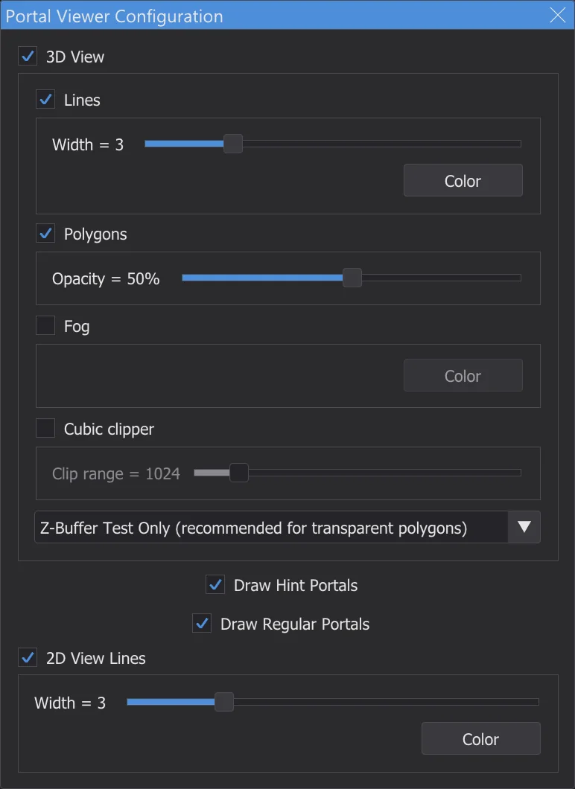
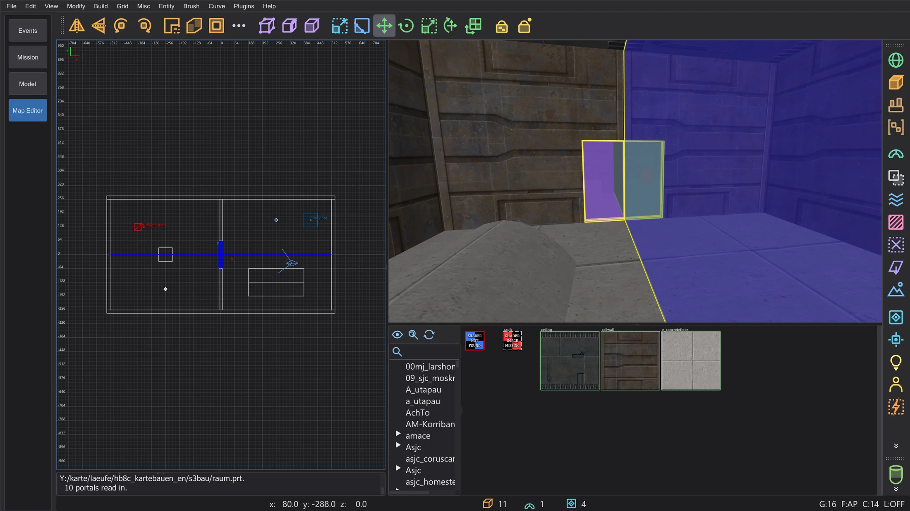
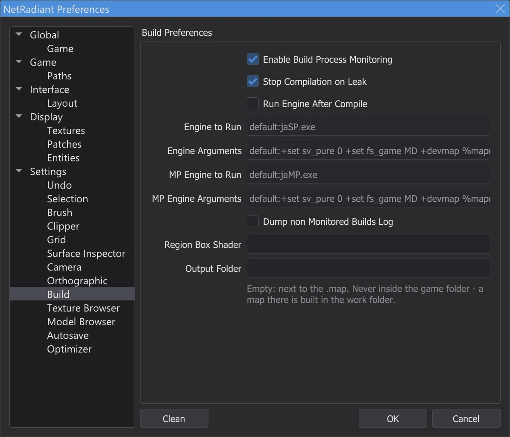

Map editor: compiling the map
Turn the map into a playable .bsp with q3map2 from the Build menu: it runs in the background with its output in the console, shows leaks as a red line and portals on request, and never writes into the game folder.
The ⟦Build⟧ menu#

Each entry runs one or more q3map2 commands on the map. The map compiler bhed_q3map2.exe is q3map2 from NetRadiant-Custom, built with the program and shipped next to behaved.exe; it produces the same results. Run recent build (F5) repeats the last entry. Customize opens the dialog Build Menu: entries and their commands can be added (double-click the +), renamed, reordered by dragging (with Ctrl copied) and deleted; Build Variables shows the variables such as [MapFile] and [q3map2]. The menu is saved when the map editor closes.

The three stages#
| Stage | What it does |
|---|---|
BSP (-meta) | Turns brushes and patches into the BSP tree and the surfaces, writes .bsp, .prt and .srf. If the map is not sealed, it stops with a leak. |
VIS (-vis) | Computes which areas can see each other, so the game draws less. Needs the portal file of the BSP stage. |
LIGHT (-light) | Bakes the light of the light entities and the sky into lightmaps and the light grid. |
[Test] Quick and Crude runs all three stages quickly for a first look, [Final] Fast and [Final] Extreme Quality give the light its real quality. The single stages are useful while working on one part, for example only Single: light stage after moving lights.
While it builds#

- 1
The map is saved first (an unnamed map asks for a name). With a region, only the region is built (
<map>.reg). - 2
q3map2 starts without a window and reports back over a local connection, as in NetRadiant-Custom. Warnings appear yellow, errors red; an error stops the remaining steps.
- 3
You can keep working - look around, select, edit. Build > Cancel build ends q3map2.
- 4
At the end a line names the entry, the steps and the time - and q3map2's exit code if it was not 0.

The console after [Final] Fast.

junk.txt in the settings folder.Finding leaks#

The inside of a map must be sealed by brushes. If q3map2 finds a way from an entity to the void, the BSP stage stops with MAP LEAKED (red), and the leak line appears red in the 2D views and the camera. The Q3Map debug window lists the entity it leaks from - a click selects it.
| Ctrl+Shift+K | Next leak spot: camera and 2D views to the next point of the line, looking along it |
| Ctrl+Shift+L | Previous leak spot: back to the previous point |
Follow the line until it leaves the map - there is the hole. Close it and build again. File > Pointfile switches the line off and on (it reads <map>.lin); saving the map removes it.
Showing portals#




Portals are the openings between the areas that the VIS stage works with. Plugins > prtview > Load .prt file loads the portal file of the last BSP stage (Show 3D, Show 2D): in the camera each portal is a coloured, half-transparent polygon with an outline, in the 2D views a blue line. Many small portals where the player sees far make the map slow - hint brushes and detail brushes help. Configure Portal Viewer sets colours, line widths, opacity, fog and a clipping cube; Toggle portals (3D)/(2D) and Unload .prt file switch the display.

Where the files go#

The .bsp and the other files are written next to the .map, as in NetRadiant-Custom. Output Folder on the page Build puts them into a folder of your choice instead (the map is copied there and built). Nothing is ever written into the game folder: if the map or the output folder lies there, the build runs in a work folder in the settings folder, and the console says so.
Testing in the game#
- 1
Copy the built
<name>.bspinto themapsfolder of the game, for exampleGameData\base\maps(with a mod: its folder, e.g.MD\maps). The map editor does not do this itself - it never writes into the game folder. - 2
Start the game yourself, open the console with Shift+~ and type
devmap <name>- the name without.bsp.devmapalso allows cheats such asnoclipandgodfor looking around. - 3
After the next build, copy the
.bspagain and typedevmap <name>once more - the game loads the new version.
+devmap <name>, as in NetRadiant-Custom - the .bsp must then already be in a folder the game searches.AutoCaulk#
Brush > AutoCaulk Selected (F4) gives every face of the selected brushes that cannot be seen from inside the caulk texture - fewer surfaces, a faster map. Stand with the camera inside the selection; q3map2 decides which faces are hidden. One undo step takes it back.